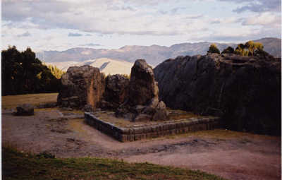
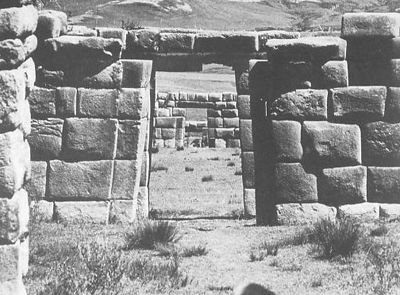
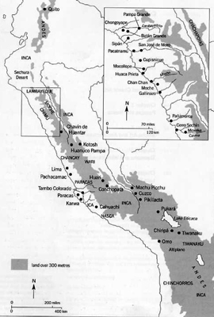
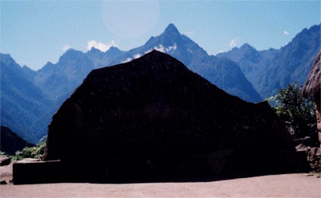
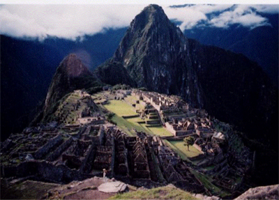
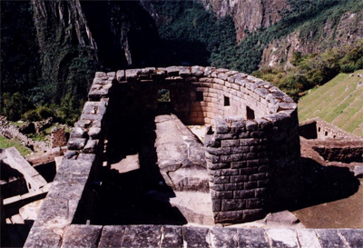
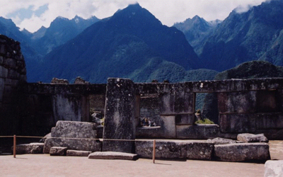

| |
The
following is a revised version of the essay that originally
appeared here. The revised version was uploaded June 15, 2007.
Inka designers often placed frames or bordering
devices around seemingly natural boulders, structures and even
the common pathways of elite individuals. The low-lying stone
wall surrounding the “Seated Puma Stone” at Qenko,
Peru (Figure 1) is one example as is the series of aligned double-jambed
trapezoidal doorways at Huánuco Pampa, Peru, along the
main walkway from the Inka ruler’s (Thupa Inka Yupanki)
living quarters to the main plaza (Figure 2). This paper will
investigate the reasons the Inka may have constructed such frames,
positing politico-religious functions that directed one’s
gaze to the sacred or elite, protected or segregated the viewer
and/or reinforced power relations between human and sacred realms.
|  |
| Figure 1. Seated Puma Stone (Inka), c.
1450 CE., Qenko, Peru. Photograph by author. |
The Inka region of the Andes, located along
the western coast of South America, consists of what is today
northern Chile, Argentina, Peru, Bolivia and Ecuador (Map 1).
Approximately 2,500 miles long but only 300 miles wide, this
is a land of extremes. Here, one finds the longest and second
highest mountain chain in the world, some of the world’s
driest coastal deserts and dense tropical jungles. Distinct
ecological zones, each producing its own set of goods and crops
are packed so tightly together that in some areas several zones
can be reached within one day’s walk.[1] Additionally,
the Western Andes is prone to earthquakes, mudslides, flash
floods and other natural disasters, making it a very difficult
place to settle. Using political acumen and warfare, the Inka
subjugated this large and culturally diverse area in only about
one hundred years (c. 1430 - 1532) but were themselves conquered
by the Spanish by the mid-sixteenth century.
|  |
| Figure 2. Trapezoidal Openings (Inka),
c. 1450 CE, Huánuco Pampa, Peru. (Reprinted from
Gasparini and Margolies, 106.) |
People in the Andes adapted unique strategies
for survival well before the rise of the Inka empire. Archaeologists
have found evidence of complex reciprocal trade relationships
dating as far back as c. 2500 BC through midden and grave remains
that originated from a variety of climactic zones. Dualistic
imagery, seemingly stemming from this intense reciprocity, is
commonly seen in even the earliest art forms of the Andes.[2]
Reciprocal relationships, however, were not limited to people.
Andean cosmology featured an animate and sacred landscape full
of deities that demanded worship and offerings in exchange for
such necessities as water, abundant crops and good health. Although
early Andean culture did not employ an alphabetic writing system,
scholars have found evidence of these reciprocal attitudes in
artistic iconography. Early vessels, such as one Moche pot depicting
an anthropomorphized mountain dripping with the blood of sacrificial
victims, for example, illustrate Andean beliefs in reciprocity
between deities and humans—in this case illustrating human
sacrifices to mountain deities in return for abundant rain.
|  |
| Map 1. Map of the Inka area of the Andes
(reprinted from Stone-Miller, 6). |
Written records from the early Conquest and
Colonial periods (c. 1532 – 1650) also illustrate the
close relationship between cosmology and the environment. Though
incorporating the various motives and biases of their authors,
these works, written mainly in Spanish or in a combination of
Quechua (Inka language) and Spanish, provide invaluable primary
data, particularly regarding Inka religious practices and politics.[3]
We know, for example, that the Inka believed in many gods that
resided in or comprised the natural world. These deities were
responsible for providing water and bountiful crops but could
also cause such disasters as droughts, floods and earthquakes,
if not venerated properly. Among the main deities were Viracocha,
the Creator god, Inti, the Sun god, and Ilyap’a, the god
of Thunder.[4] The ruler was believed to be the divine son of
Inti and, as such, was both a political and sacred symbol.[5]
Powerful warriors and highly effective negotiators, Inka rulers
mobilized thousands of people to build vast road systems and
state structures that altered the landscape. Not only did these
constructions help facilitate state business but they served
as visual reminders to the people of those who had political
control.
Similarly, frames as part of Inka elite constructions,
likely pointed to the sacred while serving to remind one of
the political power of those who put the frames in place. But
could there have been other reasons for the frames? To explore
the various possibilities of meaning of the frame, it is helpful
to understand the significance of the “subject”
being framed. Whether that which is framed is an object, a particular
feature of the landscape or an elite personage, the very act
of framing creates a relationship between subject and viewer.
The choice of material used for both frame and framed may have
also held significance to the Inka who held special regard for
certain animate and inanimate objects.
Stones, for example, played particularly important
roles in Inka belief systems as they could be called suddenly
to action to help their human counterparts, even turning into
humans themselves. One story recounts rocks on a battlefield
rising up as warriors at a particularly perilous moment in the
fight to help the Inka soldiers defeat their enemy.[6] According
to Susan Niles, “Origin myths tell of founding ancestors
emerging from the earth, being converted to stone, and remaining
for all time as tangible proof of the story.”[7] Rebecca
Stone-Miller writes:
The Inkas felt a special interchangeability
with stones, believing them to be alive and able to transform
into people and vice versa. . . . Inka stonework seems alive
as it dynamically responds to natural formations, creates
active surfaces, and dances in the strong light of the high-altitude
sun. At the same time, this dynamic Inka feeling of identity
with stone led them to manipulate stones, mountains, and streams
toward imperial expressive ends. Being one with the earth,
they proclaimed themselves able to construct cultural statements
with its materials and preexisting forms. To geometricize,
enhance, frame, and move people through the environment they
subtly changed natural outlines.[8]
Natural-looking boulders are the most frequent
objects set within borders, while all extant Inka frames are
made of rock. This may be an issue of preservation, however,
as stone does not disintegrate as easily or quickly as organic
materials, possibly distorting the surviving sample. Other factors
may distort the data surrounding frames as well. There is no
way of comparing how many frames were originally created to
those that remain since natural phenomena and later human activity
may have disrupted the placement of a frame. Another issue concerning
the current framing sample lies in how some sites or features
within these sites were later reconstructed. Despite these questions,
it is valuable to analyze the frames that remain as important
clues regarding their meaning may emerge that can be corroborated
with other material findings or with historical descriptions
that further our understanding of Inka world views.
|  |
| Figure 3. Sacred Rock (Inka), c. 1450
CE, Machu Picchu, Peru. Photograph by author. |
One of the most common types of Inka frames
are the low-lying walls that surround boulders, such as with
the “Sacred Rock” at Machu Picchu, Peru (Figure
3), located in the southern highlands. This site is striking
for its location on top of a narrow mountain crag (Figure 4).
The Sacred Rock was placed in the northern corner of Machu Picchu,
visually near the taller peak of Huaynu Picchu to the north
and the Yanantin mountain “behind” it to the northeast.
(The “back” of the Sacred Rock faces almost due
north.) At first glance the monument appears to be a large (approx.
12’ x 20’ x 3’) natural boulder surrounded
by a low-lying (approx. 3’ x 25’ x 1 1/2’)
rectangular wall made of smaller, rough stones. However, the
boulder was subtly manipulated to mimic the surrounding mountains.
While the Yanantin mountain is almost always cloud-covered,
when the clouds are lifted, one can see that the stone and mountain
behind it look strikingly similar.
 |
Figure 4. Machu Picchu,
Peru (Inka), c. 1450 CE. Photograph by author. |
Perhaps the Sacred Rock, then, was a way for
the mountain to remain visible even when clouds mask the “real”
mountain behind it. According to Johan Reinhard, mountain deities
were particularly important to the Inka as they were responsible
for providing rain and abundant crops. This is most likely why
child mummies, sacrificed in special ceremonies, have been found
on some of the highest mountain peaks in the Andes.[9] Identifying
the significance of the Sacred Rock as a visual reminder, however,
belies the pan-Andean tendency to emphasize an object’s
essence rather than outward appearance. As Rebecca Stone-Miller
has pointed out, this concept of essence explains why the Nazca
Lines were too large to have been seen from the ground or why
Inka and other Andean goldsmiths sometimes masked precious metals
with pigment or other materials.[10]
But if the signficance of the Sacred Rock
was not to replace the hidden mountain, what other function
could it have had? Perhaps another pan-Andean concept is applicable
here--reciprocity. Given the emphasis on reciprocal relationships
between communities and between people and gods, it seems reasonable
that Andean artists wanted to create a monument that would illustrate
the reciprocal relationship between humans and mountain deities.
“Mountain stones,” such as the Sacred Rock, litter
the site of Machu Picchu but none come close to its scale, and
none other is framed. Why did the Inka artisans go to the trouble,
then, of constructing this surrounding wall, particularly in
the rugged terrain of a site like Machu Picchu? Could it have
been a purely decorative choice? While this is possible, it
is not likely as there are no other Inka examples of “mere
aesthetics” and no mention of the concept of art as it
exists in the West in any of the post-Conquest texts. The presence
of the low-lying wall seems to point to the special character
of the Sacred Rock itself. Perhaps it marks a special visual
dialogue between stone and mountain,[11] or was produced as
a way of commemorating the supernatural mountain to bring it
into the human realm, and vice versa.
The wall also sets up a visual boundary between
viewer and rock. Perhaps the stone wall was used as a means
of keeping people at a distance from a particularly powerful
object or was a marker of the extremely sacred. Sacred places,
beings or objects called huacas dotted the Inka landscape. These
huacas took on many forms including springs, mountain peaks
and rocks and facilitated communication with the supernatural
world.[12] As such, they would have served as powerful mediators
between the supernatural and natural, making it too dangerous
for ordinary people to touch them. Frames around these powerful
objects may have protected or reminded the viewer not to get
too close.
|  |
| Figure 5. Semi-circular Temple (Inka),
c. 1450 CE, Machu Picchu, Peru. Photograph by author. |
Another common type of framing seen in the
Inka region is exemplified at Machu Picchu in the Semi-circular
Temple (Figure 5) where, again, one can observe what appears
to be a large, natural outcrop surrounded by a stone framing
device. In this case, the finely cut walls of the D-shaped structure
curve around the embedded boulder which has been subtly manipulated
to mark an astronomical alignment. A window opening, located
on the curved wall faces northeast and was oriented toward the
Pleaides rise azimuth (65°) during the fifteenth century.[13]
Upon the rising of the sun at the June Solstice, the sun’s
rays would have lined up with an edge cut into the stone.[14]
In this structure, then, framing takes on multivalent functions.
Not only would the entire structure have acted as a border for
the rock outcrop, but the window located in the curved wall
would have framed the astronomical phenomenon that occurred
annually at this spot.
|  |
| Figure 6. Temple of the Three Windows
(Inka), c. 1450 CE, Machu Picchu, Peru. Photograph by author. |
Window openings may have also served as frames
for particular spots on the landscape. Susan Niles states that
the “Inka repertory of forms includes viewing platforms,
thrones and fenestrated walls oriented to frame prominent features
of the landscape.”[15] Whereas Paternosto notes that windows
facing east oftentimes “framed mountains that must have
had a sacred character.”[16] One structure at Machu Picchu,
“Temple of the Three Windows,” has three unusually
large trapezoidal windows that face east (Figure 6). Not only
do the openings direct one’s gaze to the Yanantin mountain
to the east, but the presence of three windows may visually
signal the recreation of an Inka origin myth. The Spanish chronicler,
Sarmiento de Gamboa, relates that the birthplace of the first
four Inkas was from three windows in the side of a hill, much
like the structure at Machu Picchu.[17] The framing devices
here, then, make an implicit connection between human observer,
sacred landscape and Inka rulership.
Just as with the “Sacred Rock,”
the Intihuatana or “Hitching Post of the Sun,” appears
to have been sculpturally manipulated to replicate the curvature
of the mountain behind it (Figure 7). Located at the highest
point of the main plaza area of Machu Picchu, it is visually
framed by flanking structures. Although its function has not
yet been determined, it may have served as a place to set offerings
to the Sun or may have symbolized the “place spirit”
of the mountain.[18] Whatever its function, it is clear from
its high placement, mimicry of the surrounding mountains as
well as the presence of framing devices that the Intihuatana
was a very important monument.
Another framing technique commonly employed
by the Inka is serial doorwayor window alignment. While there
are many examples of this type of alignment at Machu Picchu,
Huánuco Pampa provides a particularly striking example.
Huánuco Pampa is a well-preserved site located north
of Machu Picchu on a flat plain high above the Urqumay River
in Peru. The site covers an area of approximately 1.24 square
miles and originally held approximately 4,000 structures.[19]
Finely cut stone, associated with the elite, can only be seen
in the eastern sector of buildings which is thought to have
been a palace complex for the Inka ruler, Thupa Inka Yupanki.[20]
It is in this elite sector that Inka artisans constructed a
series of four trapezoidal, double-jambed doorways each aligned
to frame the other as one looked from the main plaza toward
the palace compound (Figure 2). These gateways would have traced
a long east-west passageway connecting the main plaza to the
ruler by framing him as he walked out of his palace toward the
people gathered in the central plaza. The eastward direction
traveled by the Inka as he arrived at the plaza, and the westward
direction in which he returned, may have emphasized, together
with the bordering elements, the ruler’s sacred and political
power.
The framing examples at Machu Picchu and Huánuco
Pampa suggest that Inka artisans deliberately chose to frame
certain objects through the strategic placement of stone or
architectural elements. These examples point to functions that
adhere to deeply ingrained Inka worldviews, namely reciprocity,
politico-religious sanctity and the continuous dialogue between
humans and the surrounding sacred landscape.
Sources>>
Author's
Bio>>
|
|